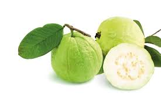
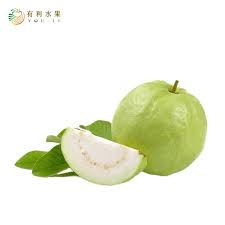

芭樂
芭樂的熱量及營養價值
以每 100 公克的芭樂、紅心芭樂、椪柑（普遍被認為維他命C 較高的水果代表）來做比較，每 100 公克的水果雖然熱量相差不多，不過芭樂的「維他命C」和「膳食纖維」明顯高過椪柑。芭樂的強項相當顯而易見。 而紅心芭樂與一般芭樂的差別在於 β-胡蘿蔔素含量較高。

芭樂怎麼吃最好？
根據衛生福利部的建議，每人每日建議攝取的水果類為 2~4 份，每份水果約 8 分滿飯碗的大小，攝取芭樂需要注意定量的原則，才不會造成消化道或者代謝相關的問題產生。
如果有代謝相關的慢性病，也可諮詢專科醫師或營養師的建議，調整攝取量。

芭樂的特色
芭樂在台灣常見的俗名有番石榴、拔仔、扒仔、朳仔、那拔仔。原產地為拉丁美洲，輾轉傳入台灣，屬於熱帶水果的一種。在台灣一年四季皆可收穫，是相當常見的水果之一。坊間可見的有白色和紅色兩種顏色果肉的品種。
芭樂富含維他命C，在水果中，其維他命C 的含量名列前茅，食用芭樂對於維持健康的益處相當多，但是要注意的是；芭樂的膳食纖維及單寧酸含量也略高，需要控制攝取量才不會造成身體過多的負擔。
資料來源: